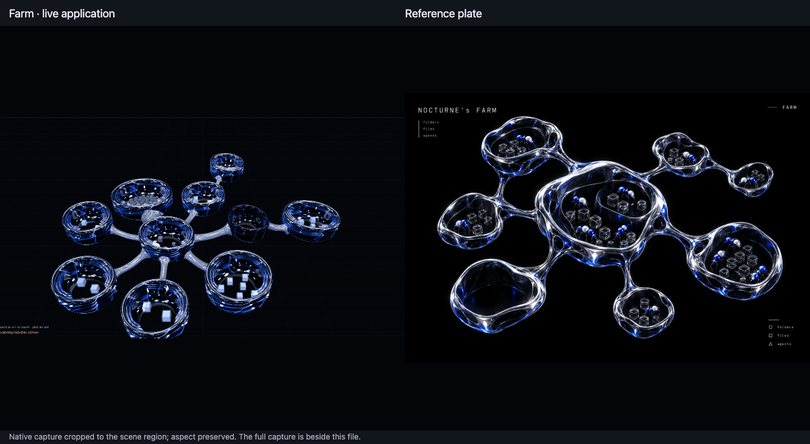
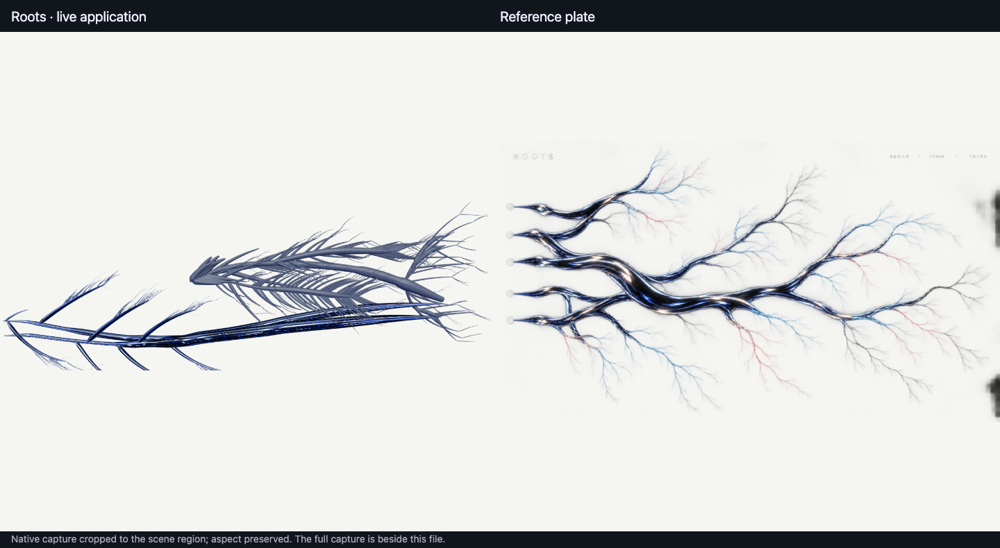
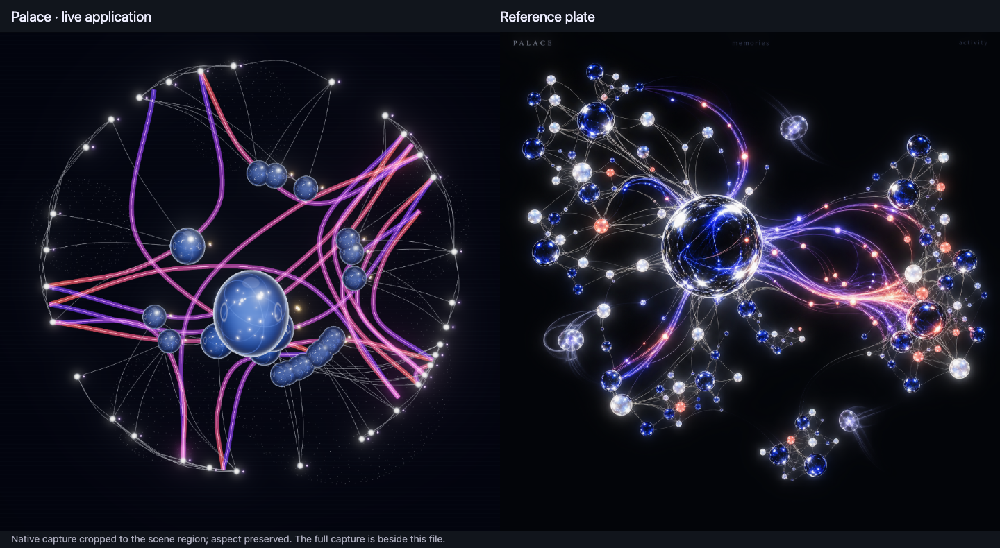

For the owner's eye. Every recording is the running app at 2× while real work changes its data, and every change comes from something done through the app or the Palace API: prompts sent through the composer, a Symphony signed in its deliberation card, memories written and a curator pass started. Nothing on screen is fixture data. The camera drifts slowly so depth reads; the scenes move only when data changes.
A thread tours the project with the move tool: references → data → src/riverflow → tests → notes → docs → root. Its ant walks the glass limbs to each chamber as its recorded location changes. The files it reads light up, and a flash marks each new touch. The empty docs chamber is dim until a file is written into it.

Still differs: the plate's chambers are blobby, fused shapes; ours are round basins joined by limbs. The plate also has more ants and cells per chamber than this 10-folder project holds.
Recorded while a real Symphony's two attempt workers ran (turns plus tool calls across all agents rose 269 → 335). Each new turn and tool call grows a branch with a cobalt light running out along it. A worker root turns to dry grey satin when it stops. The view eases as the river grows.

Still differs: the plate is one wide river with five parallel roots and long, fine red and blue capillaries. Ours shows two projects as separate rivers, and the Symphony's many short turns make dense fishbone branching.
Eight memories arrive 2.5 s apart, each growing in with a ring of light. Then a curator pass runs over the Palace: each finding draws a violet-to-red stream between families, and the ghost travels the latest one.

Still differs: the plate is denser, with more small lit nodes and a darker central sphere with a brighter rim. With 18 findings, our streams cross the whole Palace instead of flowing in one direction.
Full captures: farm, palace, roots; efficient tier: farm, palace, roots. Efficient tier holds 60 fps at the display cap; uncapped, Farm 824+, Roots 822+, Palace about 1,700.
{kind=link}
{kind=link}
{kind=link}
{kind=link}
{kind=link}
{kind=link}